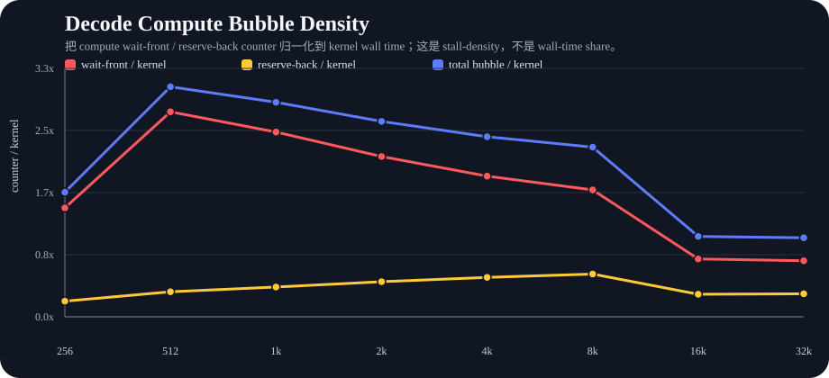
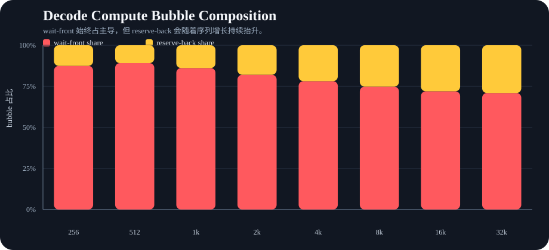
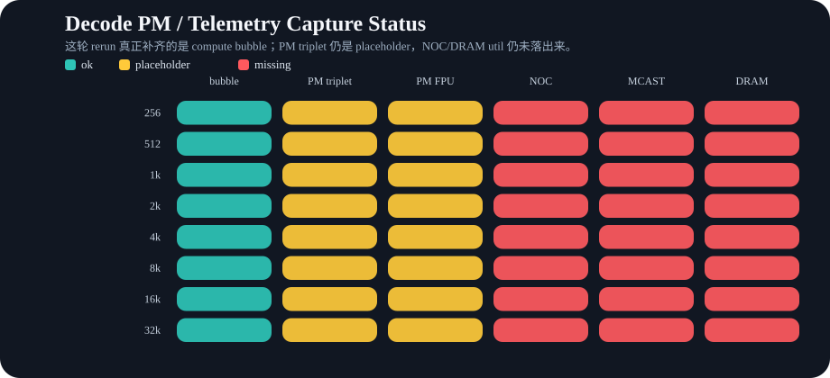

这页只对应 guarded `decode_safe` rerun。重点不是重新解释 reader/writer stage，而是把这轮真正补齐的 compute bubble 计数和仍然缺失的 PM/NOC/DRAM util 状态单独拎出来看。



解释口径：compute bubble 这里按 counter 密度而不是 wall-time share 来读，因为短序列点上 counter 总和会超过单次 kernel wall time。Stage-level 的 reader reserve / writer cb_wait 仍然以 detailed JSON 里的分解表为准。